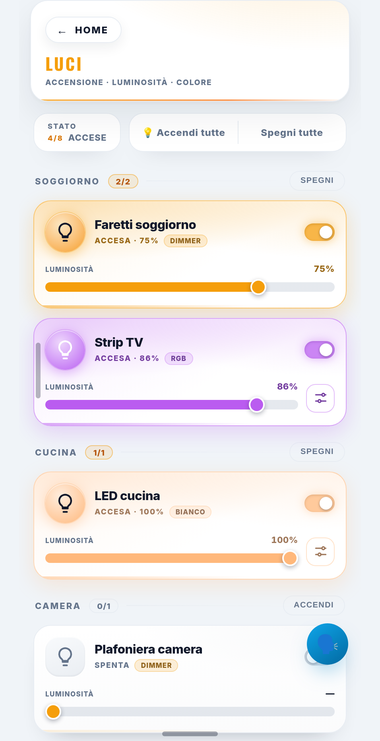
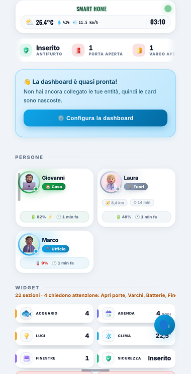
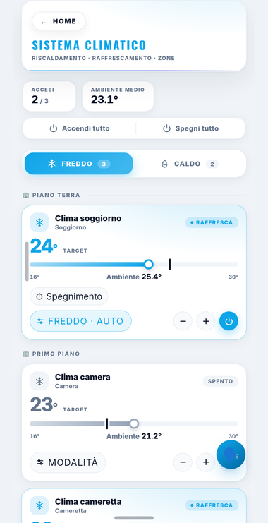
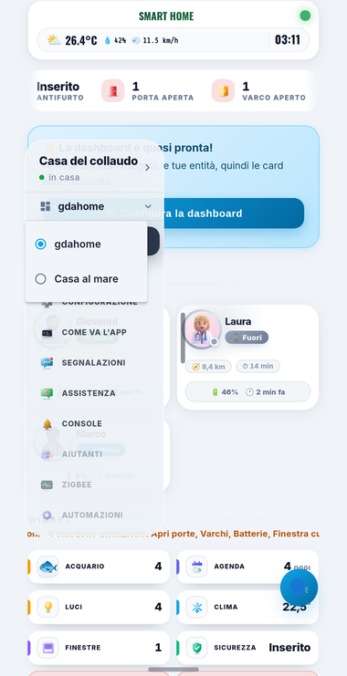
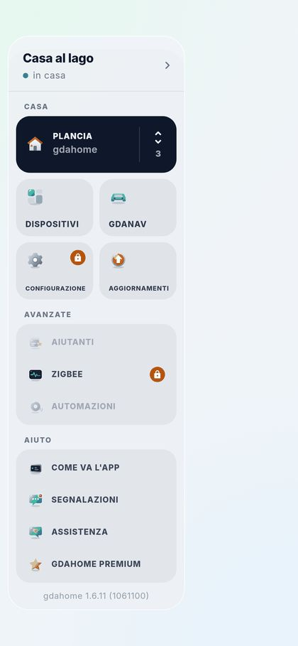
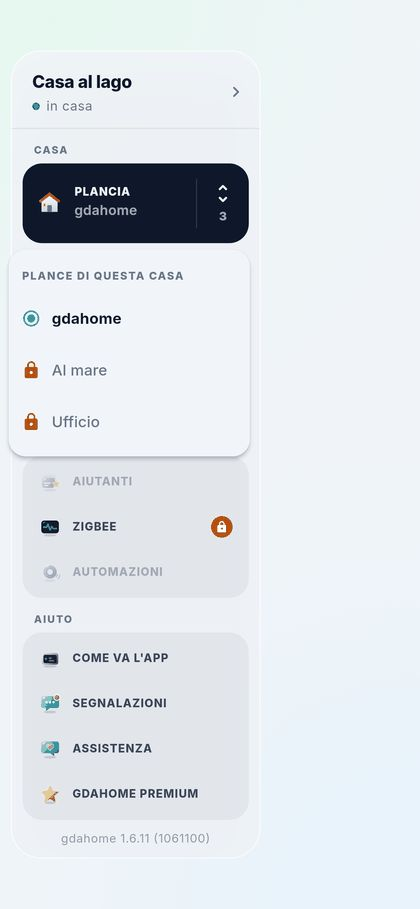
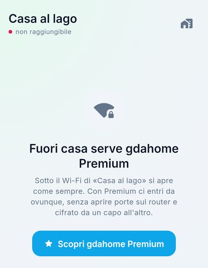
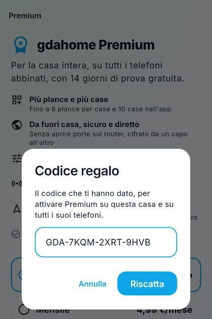

Trenta sezioni, già pronte
Luci, clima, sicurezza, energia, finestre, batterie, agenda e le altre, ognuna col suo disegno. Si collegano le entità di Home Assistant, e la plancia le mette al loro posto.
Per Home Assistant
gdahome mostra Home Assistant sul telefono come una plancia — quella vera, con le sue trenta sezioni — e ci mette accanto quello che in Home Assistant richiede più passaggi: abbinare un dispositivo Zigbee e scegliere dove va, configurare la plancia, entrare da fuori casa. E dentro c'è gdanav, il navigatore.
L'abbinamento avviene inquadrando un QR code: nessun indirizzo da digitare, nessuna credenziale di Home Assistant. Base è gratis; Premium comincia con 14 giorni gratis.

La plancia
L’app non riscrive la plancia: mostra quella vera, la stessa che l’add-on mette in Home Assistant, con le sue tessere, le sue finestre e la sua configurazione. Le stanze, le luci col colore, il clima con le sue curve: sono fotografie dell’app, e quello che si vede qui è quello che si trova installandola.



Luci, clima, sicurezza, energia, finestre, batterie, agenda e le altre, ognuna col suo disegno. Si collegano le entità di Home Assistant, e la plancia le mette al loro posto.
Quello che le trenta non coprono — l’acquario, la piscina, l’orto — diventa una sezione propria, con le entità che si scelgono, nella barra accanto alle altre.
La pagina Config della plancia, intatta, dentro l’app: sezioni, stanze, ordine. Con Premium, senza aprire Home Assistant dal computer.
Il collegamento
Nessuna porta da aprire sul router, nessun indirizzo pubblico da avere, nessuna VPN da installare. È l'add-on ad aprire una connessione verso il centralino e a mantenerla aperta; i telefoni si collegano da quel lato.
Nessun indirizzo, nessuna credenziale di Home Assistant. Si inquadra il QR code che l’add-on mostra in Home Assistant — o si digita il codice, sedici caratteri in quattro gruppi, se la fotocamera non è disponibile — e il telefono riceve una credenziale propria, valida solo per quella casa e revocabile con un tasto.
Il token del Supervisor non esce mai dall’add-on: né la pagina né il telefono lo vedono. Un token di lunga durata incollato a mano vale tutto e non scade; questo vale una casa sola, ed è revocabile.
Ogni casa ha la sua credenziale, e si passa dall’una all’altra dal menu dell’app. La casa dei genitori, quella al mare, quella di chi ha chiesto una mano: con Premium fino a dieci, la stessa app, lo stesso telefono.
L’app gdahome
gdahome è l’app per Android e iPhone — e si apre anche dal browser — che si abbina alla casa inquadrando un QR code. Dentro c’è la plancia; intorno, le cose che in Home Assistant richiedono più passaggi: i dispositivi, lo Zigbee, la configurazione, le segnalazioni.



Sul Play Store con Android Auto, sull’App Store con CarPlay e Siri, per telefoni e tablet. Chi non vuole installare niente la apre dal browser, e la abbina digitando il codice.
Base è gratis e non scade: la plancia principale, una casa, sulla rete di casa. Premium è della casa e vale su tutti i telefoni: fino a 8 plance e 10 case, l’accesso da fuori casa, la configurazione e lo Zigbee dall’app, gdanav Premium compreso.
Fuori dal Wi-Fi di casa, senza Premium, l’app lo dice chiaro invece di lasciarti ad aspettare. E Premium arriva anche con un codice regalo, da scrivere nell’app.
Vedi i prezzi

Quanto costa
Base è gratis e non scade. Premium è della casa, non del telefono: tutti i telefoni abbinati a quella casa, e l’app dal browser, sono Premium insieme a lei. In tutti e due i casi nessun account da fare, nessuna pubblicità, e niente di tuo da vendere.
Gratis
4,99 € al mese o 49,99 € all’anno
I 14 giorni gratis valgono la prima volta. Si disdice dal Play Store o dall’App Store, come ogni abbonamento; se Premium finisce, la casa torna Base e le plance in più restano salvate fino al rinnovo.
La pagina Premium, il piano mensile o quello annuale: si paga con Google Play o con l’App Store. Dal browser non si compra: si compra dal telefono, e vale anche lì.
È fatto così: GDA-XXXX-XXXX-XXXX. Si scrive nella pagina Premium
dell’app — anche dal browser — o nella scheda dell’add-on in Home Assistant. Vale
una volta sola.
Gli installatori hanno da gdahome licenze Premium — di un mese, di un anno, per sempre — e le assegnano alle case dei loro clienti. Se il tuo l’ha fatto non c’è niente da fare: la casa è già Premium.
Con gdahome Premium è compreso: la casa Premium sblocca tutto anche nel navigatore, senza un secondo abbonamento.
Gratis
2,99 € al mese o 29,99 € all’anno
Per chi installa
Il cruscotto è la parte di gdahome per chi mette in piedi impianti per gli altri: ogni casa che segui manda un rapporto al minuto, una pagina sola ti dice quali hanno bisogno di qualcosa, e da lì dai ai tuoi clienti le loro licenze Premium.
Ognuna solo dove il cliente l'ha permessa: tre interruttori nella scheda dell'add-on, spenti di serie, che chi abita la casa accende e spegne.
Un elettricista sostituisce un interruttore senza leggere la posta di chi ci abita.
Come entra una casa: dal cruscotto generi un codice che vale un giorno, chi abita la casa lo incolla nella scheda dell'add-on, e da quel momento quella casa compare nella tua pagina e in nessun'altra.
Scaricala
Prima l’add-on in Home Assistant, poi l’app sul telefono — o nel browser — e un QR code fra i due. Cinque minuti la prima volta; poi gli aggiornamenti arrivano da soli.
Si chiama gdahome e si installa dal negozio, come qualunque altro
add-on: Impostazioni → Add-on → Negozio → Archivi, si incolla
https://github.com/danigio15/gdahomeapp e compare nell’elenco. Da lì in
poi si aggiorna da sé.
Serve Home Assistant OS o Supervised, cioè le due che hanno il Supervisor. Su Container — Home Assistant in Docker — il negozio degli add-on non esiste, e non si installa nessun add-on di nessuno.
Come si installa →Sul Play Store, con Android Auto. Si apre l’app, si inquadra il QR code che mostra l’add-on, e la casa è abbinata. Premium si compra da qui, coi primi 14 giorni gratis.
Al Play Store →Sull’App Store: si cerca gdahome. Tutto quello che ha l’app per Android, con CarPlay e Siri. Stesso Premium: è della casa, quindi vale su tutti i telefoni.
La stessa app, senza installare niente, e si adatta allo schermo. Si apre dalla scheda dell’add-on in Home Assistant o da webapp.gdahome.org, e si abbina digitando il codice.
Aprila →È quello che fa entrare da fuori casa, con Premium. Gira su una macchina di gdahome, la stessa di questo sito, e non conserva nulla: fa incontrare un telefono e la sua casa senza poter leggere quello che si scambiano, perché quello che passa è già cifrato quando arriva e le chiavi non le ha.
Com'è fatto →Il codice per intero, ed è pubblica: l’add-on, il centralino, l’app, gli strumenti e le prove automatiche che girano a ogni modifica.
Vai alla repository →Sostegno
Premium si compra dall’app. Il sostegno è separato: non sblocca niente e non diventa mai uno sconto. Serve a far andare avanti il piano — gli aiutanti, le automazioni guidate — e a tenere in piedi la versione Base per chi non paga.
In tempo su questo: assistenza più rapida, correzioni più rapide, e prove su dispositivi veri invece che su un emulatore.
Chi dona non ha una funzione che gli altri non hanno, e nessuno viene richiesto due volte. Se ti è utile e ti va, grazie; se no usala lo stesso, che è quello per cui c’è.
Passa da PayPal o da GitHub, e va a chi la scrive. Quanto vuoi.
Contatti
Se gdahome è già in casa tua, la strada più corta è la chat di assistenza dentro l'app: arriva con la versione e con lo stato del collegamento, e si risponde da lì. Per tutto il resto — il cruscotto per chi installa, una domanda prima di cominciare, una collaborazione — c'è questo modulo. Arriva a assistenza@gdahome.org.